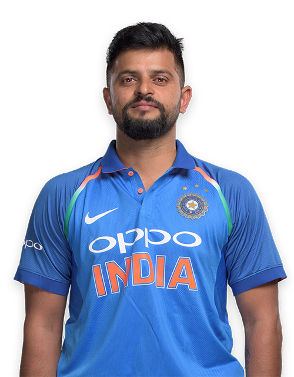

Introduction On Suresh Raina:
Suresh Raina is born on 27 November in 1986 at Murad Nagar, Gaziabad in Uttar Pradesh. His full name is Suresh Kumar Raina. He is also known as "Sonu" and as "Raina". Their family is lived in "Rainawari" village in Jammu & Kashmir, so he got name as "Raina". He is an Left-hand attacking batsman and Right arm off spin Occasional Bowler.
He Plays for India in all International matches and plays for Uttar Pradesh in all domestic matches. He also Plays for Chennai Super Kings in ipl (Indian Premier League) and Champions League Twenty-20 (clt20). He made his odi debut on July 30 in 2005 against Sri lanka and made his Test debut on July 26-30 in 2010 also against Same Opponent (Sri lanka). He made his ipl debut in 2008 on April 19 against Kings XI Punjab (it is also the first match for Chennai Super Kings Team) and made his Champions League debut in 2010 against Wayamba.

More Info
| Name: | Suresh Raina |
| Nick Name: | Chinna Thala |
| Batting: | Left-Handed |
| Bolwing: | Right arm off break |